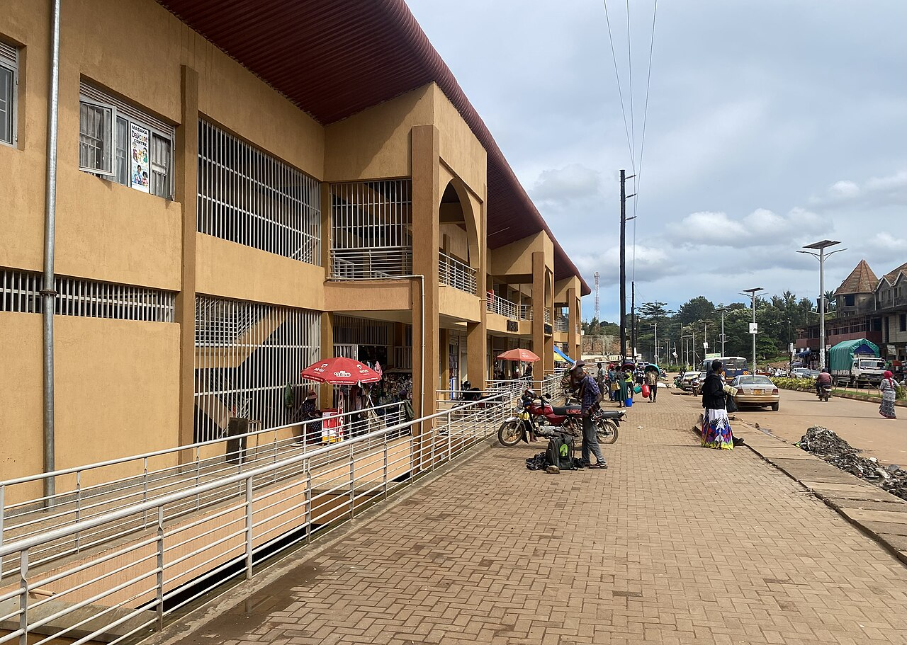
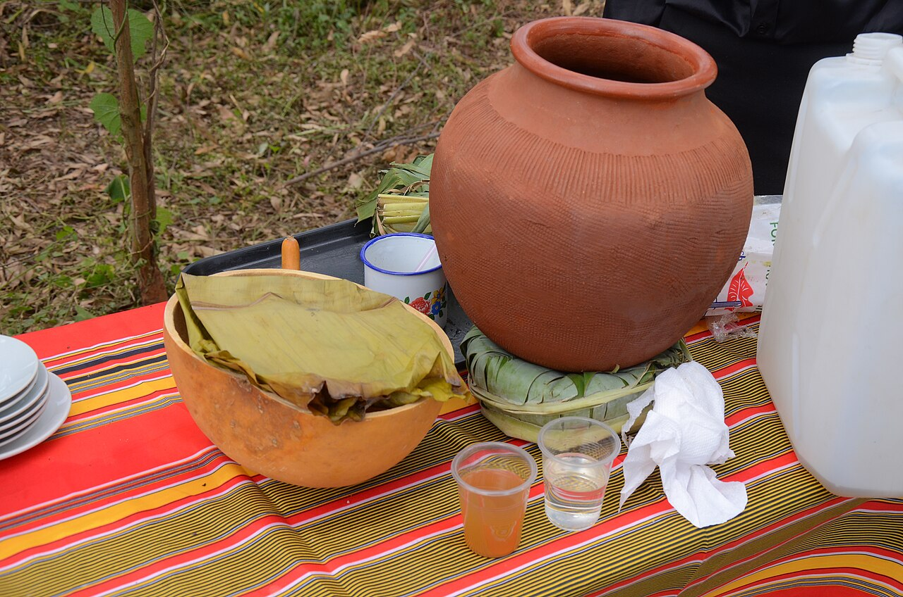

Featured guide · Farming
From farm to Kampala: selling pineapples for more
Grading, packing, finding buyers and using Mobile Money safely. A step-by-step guide from local farmers who have done it.
12 min read · By the Kasawo Yaffe teamLatest advice

Farming
Getting better prices for your matooke
When to sell, how to grade bunches and how to reach bigger markets.
5 min read
Business
Registering your small business: a simple guide
The steps, the costs and what you need to bring.
7 min read
Business
Taking good product photos with your phone
Simple tips that make your Marketplace listing stand out.
4 min read
Health
Safe drinking water at home
Boiling, storing and keeping water clean for your family.
3 min read
Safety
Boda boda safety: what every rider and passenger should know
Helmets, registration and staying safe on the road.
4 min read